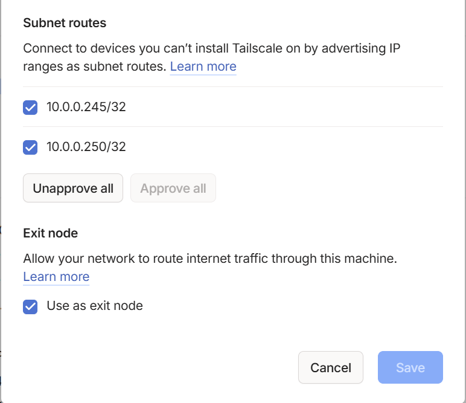
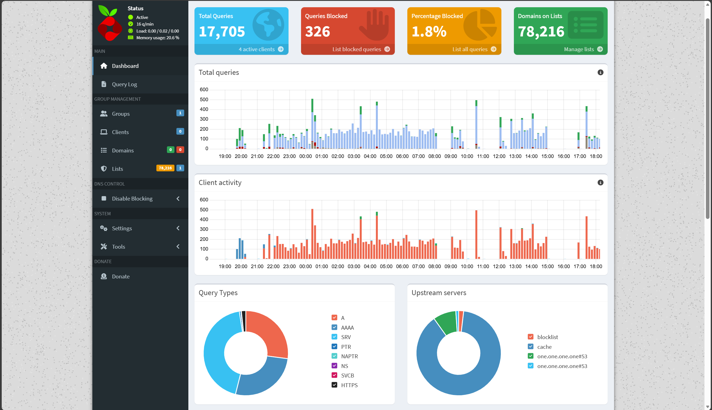
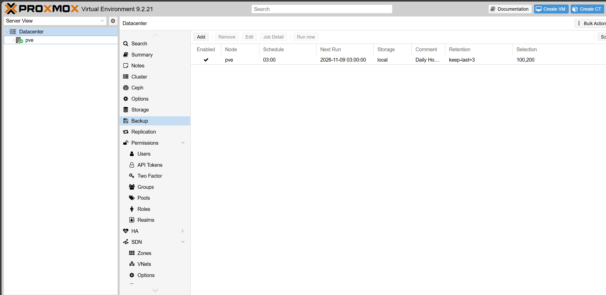

03 / ENGINEERING
What I configured.
What I had to work through.
I turned my HP ProBook into a Proxmox server to practice managing virtual environments. These notes cover what I set up, the problems I worked through, and how I checked my work.
The networking took some of the most work. I wanted to reach the lab from my Dell and iPhone, use Pi-hole for DNS filtering, and understand when to use subnet routing or an exit node. Those stories come first.
01
Tailscale · subnet routing · personal and school networksReaching my lab with Tailscale
Reaching my lab with Tailscale
I wanted to access my home lab securely from my Dell and iPhone while away from home. I also use a Tailscale/Headscale environment for school, so I needed to keep my personal setup separate.
What I set up
I installed Tailscale directly on Ubuntu VM 200, outside Docker. I connected my personal devices to my own tailnet—Tailscale’s name for a private network of devices. I advertised 10.0.0.245/32 and 10.0.0.250/32 as routes through the VM, then approved both in the Tailscale administration console.
Why I chose two host routes
Subnet routing lets me reach devices on my home network through the Ubuntu VM. I only needed the Proxmox and Ubuntu hosts, so I used a /32 route for each one; each route covers a single IPv4 address. This kept the routes limited to those two hosts. I still needed Tailscale authentication and access rules to control who could connect.
How I checked it
I connected from a different internet connection and checked that I could reach the Proxmox and Ubuntu interfaces. The screenshot below shows both host routes approved, along with the separate exit-node setting.


Enlarge evidenceBoth host routes and the exit-node option are approved here. I still have to select the exit node on a remote device before its internet traffic uses my home connection.
Recorded screenshot · values are from the time of captureWhat I learned
Connecting my devices to Tailscale was only part of the setup. To reach the two home-network addresses, I also had to advertise the routes from Ubuntu and approve them in Tailscale.
02
IP forwarding · exit-node selection · remote testingUsing my Ubuntu VM as an exit node
Using my Ubuntu VM as an exit node
Once I could reach the lab remotely, I wanted to try sending a device’s internet traffic through my home connection. That is what the exit node is for.
What I set up
I enabled IPv4 and IPv6 IP forwarding, which lets Ubuntu pass network traffic through the VM. I made those settings persistent so they would remain after a restart. Then I advertised the VM as an exit node, approved it in Tailscale, and selected it on a remote device.
Understanding the difference
The two host routes gave me access to specific systems at home. The exit node gave me the option to use my home connection for internet traffic as well. I had to select it on the device I was testing; approving it in Tailscale did not automatically turn it on for every device.
How I checked it
I tested from a different internet connection and checked that the remote device’s internet traffic went through the Ubuntu server and out through my home connection. This was a separate check from reaching the two lab hosts.
Connects my authorized devices through Tailscale.
Let me reach the two approved home-network addresses.
Sends that device’s internet traffic through my home connection.
What I learned
This helped me understand why subnet routing and an exit node have separate settings. I can reach the lab without choosing to send all of a device’s internet traffic through it.
03
Docker · TCP/UDP 53 · DNS lookup testsGetting Pi-hole working on my Dell
Getting Pi-hole working on my Dell
I wanted to use Pi-hole on my Dell and check that it actually blocked advertising domains. DNS looks up IP addresses for domain names, so testing those lookups was a useful way to check the filtering.
What I set up
I ran Pi-hole in Docker and published DNS port 53 over both TCP and UDP. I configured upstream DNS resolvers for lookups Pi-hole needed to pass on, then set up Tailscale DNS so my Dell would use Pi-hole.
Working around the gateway limitation
My Xfinity gateway did not let me make the network-wide DNS change I wanted. I configured the Dell’s DNS path instead. Other home devices do not automatically use Pi-hole just because it is running on the network.
How I checked it
I used nslookup and Resolve-DnsName to test normal domain lookups and a blocked advertising domain. Normal lookups resolved, while the blocked lookup returned 0.0.0.0. That gave me a concrete check that the filtering was working for the Dell.


Enlarge evidenceMy Pi-hole dashboard when I took the screenshot. It shows totals and activity charts, without a detailed device or query log. The numbers do not update on this website.
Recorded screenshot · values are from the time of captureWhat I learned
I needed to check both ends: Pi-hole had to be running, and my Dell had to use it for DNS. The lookup tests helped me verify the setup beyond simply opening the dashboard.
04
Tailscale DNS override · different settings for each deviceWorking through the iPhone Private Relay warning
Working through the iPhone Private Relay warning
My iPhone displayed an iCloud Private Relay incompatibility warning when I used Tailscale’s DNS override with Pi-hole. I wanted to understand which setting caused the conflict before deciding what to change.
What I tried
I changed the Tailscale DNS override setting and compared the iPhone’s behavior. This setting controls whether Tailscale replaces the device’s usual DNS settings. Changing it helped me narrow the warning down to the Pi-hole and Tailscale DNS combination.
The settings I chose
I kept Pi-hole DNS filtering on my Dell and chose to preserve Private Relay on the iPhone while using cellular. The same DNS settings did not suit how I wanted to use both devices.
What I could confirm
The warning was tied to the DNS override configuration I tested. I worked around the conflict by choosing different settings for the Dell and iPhone; I did not get Pi-hole filtering and Private Relay working together in that setup.
Pi-hole through Tailscale DNS
I kept the DNS filtering setup I had tested.
Preserve iCloud Private Relay
I chose to keep Private Relay available on cellular.
What I learned
I could make a useful choice without making both devices behave the same way. For my setup, that meant filtering DNS on the Dell and keeping Private Relay on cellular for the iPhone. It does not make either option universally safer.
05
Netplan · static IPv4 · DHCP rangeGiving the Ubuntu VM a static IP address
Giving the Ubuntu VM a static IP address
I wanted the Ubuntu VM to keep the same IP address so I could reliably connect to the services running on it. Configuring that myself was part of learning to administer Ubuntu.
What I set up
I used Netplan, Ubuntu’s network configuration tool, to set a static IPv4 address. My gateway’s DHCP range was 10.0.0.2 through 10.0.0.240, so I chose an address outside it.
Why the DHCP range mattered
DHCP assigns addresses to devices automatically. By choosing a static address outside that range, I kept the VM’s address out of the pool the gateway could hand to another device. I also needed the correct gateway and DNS settings for the VM to reach the internet and look up domain names.
How I checked it
I checked that the VM could reach the gateway, access the internet, and resolve domain names. I did these checks before relying on the address for my hosted services.
Gateway DHCP range: 10.0.0.2–10.0.0.240
Ubuntu VM: static IPv4 address set with Netplan, outside that range.
What I learned
Setting the address was only one part of the network configuration. Checking the gateway, internet access, and DNS separately helped me confirm the VM was ready for the services.
06
Docker Engine · Compose · volumes and bind mountsSetting up Docker and keeping application data
Setting up Docker and keeping application data
I wanted to run several applications inside VM 200 and understand where they kept their data. I needed application settings and files to remain available even when a container was replaced.
What I set up
I installed Docker Engine and Docker Compose, then deployed Portainer and Pi-hole. I used Compose files to describe services and their storage mappings, including volumes and bind mounts. After testing the initial services, I added Audiobookshelf and Navidrome.
Working out what needed to persist
Volumes and bind mounts give applications storage that stays separate from the container itself. I used them for application data and kept track of the separate audiobook, podcast, and music libraries. These files still need backups; keeping them outside a container does not protect them if the underlying storage fails.
How I checked it
I checked that I could access Portainer and Pi-hole after deploying them. The Portainer screenshot on the Services page shows all four application containers. Audiobookshelf and Navidrome are deployed, but I am still adding content to their libraries.
Settings and other files the applications need to keep.
The audiobook, podcast, and music files I add.
Copies I can use to recover data if the working files are lost.
See my Portainer container list ↗
What I learned
Writing the Compose configuration made me pay attention to where each application stored its files. I also learned to keep persistent storage and backups as separate tasks.
07
Proxmox · 03:00 · snapshot mode · ZSTDScheduling backups and planning separate storage
Scheduling backups and planning separate storage
After setting up the Ubuntu environments, I wanted backups of both CT 100 and VM 200. I had put time into configuring them and wanted a way to recover that work.
What I set up
I completed manual backups of CT 100 and VM 200, then created a daily Proxmox backup job at 03:00. I chose snapshot mode and ZSTD compression, with keep-last=3 to retain the last three backups for each guest.
Why I still need separate storage
Right now, the backups are on the same physical laptop as the systems they protect. They would not help if I lost the laptop or the storage holding both the guests and backups. I still need backup copies on separate physical storage.
What I have checked so far
The manual backups completed. The screenshot shows the daily job enabled for both guests, with local storage and the retention setting. It confirms the schedule I configured, not whether later automatic runs succeeded. I have not completed a documented restore test yet.


Enlarge evidenceThis shows the schedule, local storage, selected guests, and retention. Snapshot mode and ZSTD are settings I chose, but they are not shown in this view. The next-run date is from when I took the screenshot.
Recorded screenshot · values are from the time of captureWhat I learned
I have made backups and set up the schedule, but I still need to practice restoring a guest. My next steps are to document that restore test and keep backup copies off the laptop.